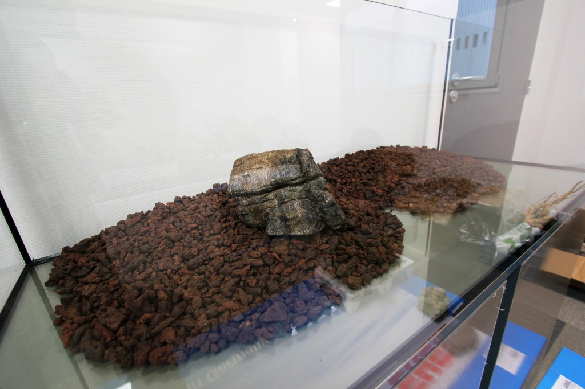

Racines en folie
Par Mike
Mettre une couche de roche volcanique concassée
Ce support permet une bonne aération des racines pour les plantes. Il évite les effets néfastes du colmatage du substrat. Il est possible de l’utiliser pour faire un dénivelé qui tient dans le temps. C’est un excellent support bactérien qui apporte une stabilité au bac.

Commentaires
Superbe agencement, c'est la fête des racines.
Je veux le même mais je n'ai pas la place.
Ajouter votre commentaire